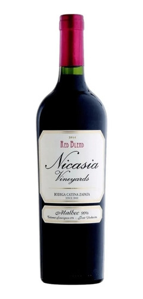
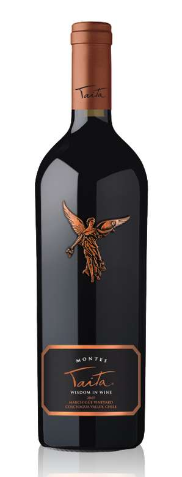
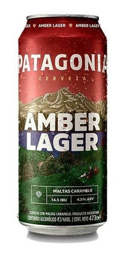
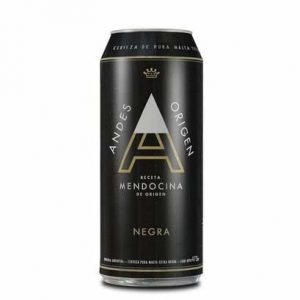
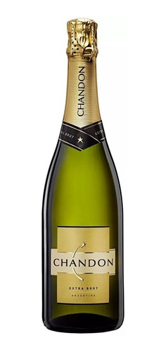
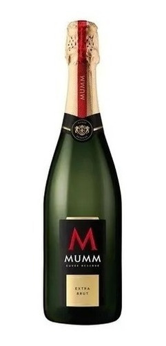

En esta seccion podemos encontrar las diferentes bedidas
VINOS:

Se perciben en este vino intensos y dulces sabores a ciruelas y moras maduras aportados por el Malbec

Taita es un vino elegante, concentrado, complejo, de producción extraordinariamente limitada.
CERVEZAS:

Es una cerveza que se caracteriza por su color dorado brillante y aroma maltoso, como a pan

Es una cerveza estilo IPA de la escuela Inglesa. Este estilo de cerveza se caracteriza por el amargor
ESPUMANTES:

Chandon Extra Brut es el gran clásico de Chandon. Las mejores uvas de Chardonnay y Pinot Noir nos permiten crear un espumoso fresco, frutado, elegante, cremoso y equilibrado. Se destaca por su fineza y precisión

El equilibrio entre la acidez del espumante y la dulzura de la uva moscatel hacen a su sabor único e irresistible, dando como resultado un espumante fresco, liviano, de baja graduación alcohólica, muy fácil de tomar.